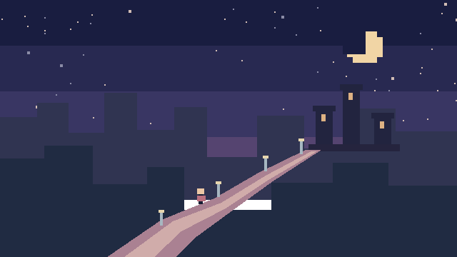

一份复古游戏原声选集
穿过像素原野，走向星光栈道，在亮着灯的港口停一停。为你的游戏，听见一个新的世界。

选择你的游戏世界
3 个主题 / 4 段声音戴上耳机，慢慢挑选。
启用 JavaScript 可查看完整选集与提示词。直接试听：星光栈道 FM、采样版、像素小径、灯火港湾。
这些展示音频可自由用于你的项目，包含商业游戏。每首都附有 WAV 和 JSON 乐谱，方便继续调整旋律、音色与编配。
Retro Music Toolkit 将结构化乐谱变成复古配乐。本地渲染、定点修改，保留你已经喜欢的部分。